Amici
Una molisana, un calabrese e due napoletane
Beh, che dire, sbandati del mio cuore,
È appena finito un capitolo che, inutile dirlo, non sarebbe stato lo stesso senza di voi.
Una molisana, un calabrese, una napoletana e una scafatese (Giu, mi dispiace, ma dobbiamo chiamarti per quel che sei). Già detta così fa sorridere. Eppure, in qualche modo, eccoci qui, tre anni dopo.
Tra lezioni, esami, sessioni infinite, momenti di sconforto e risate nei momenti meno opportuni, abbiamo condiviso molto più di quanto probabilmente ci aspettassimo all’inizio.
Non so se siamo mai stati il gruppo universitario “modello”, ma forse è proprio questo il bello. Nel caos di questi anni siete diventati una presenza costante, una di quelle che finiscono per far parte dei ricordi senza nemmeno accorgersene.
Tra qualche anno probabilmente ricorderemo poco di molti esami, ma sono abbastanza sicura che continueremo a raccontare gli aneddoti, le risate e i momenti assurdi che abbiamo vissuto insieme.
Grazie per essere stati, magari senza nemmeno accorgervene, un punto di riferimento in questi anni. Per tutte le volte in cui siete riusciti a trasformare una giornata pesante in una più leggera e a ricordarmi che, in fondo, non stavo affrontando tutto questo da sola.
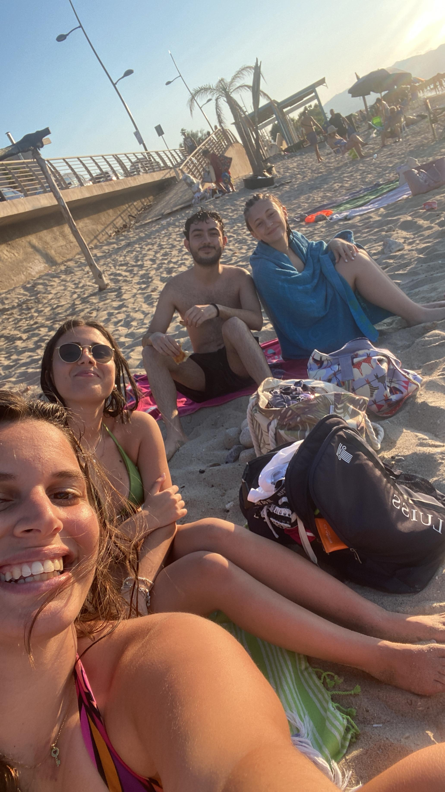
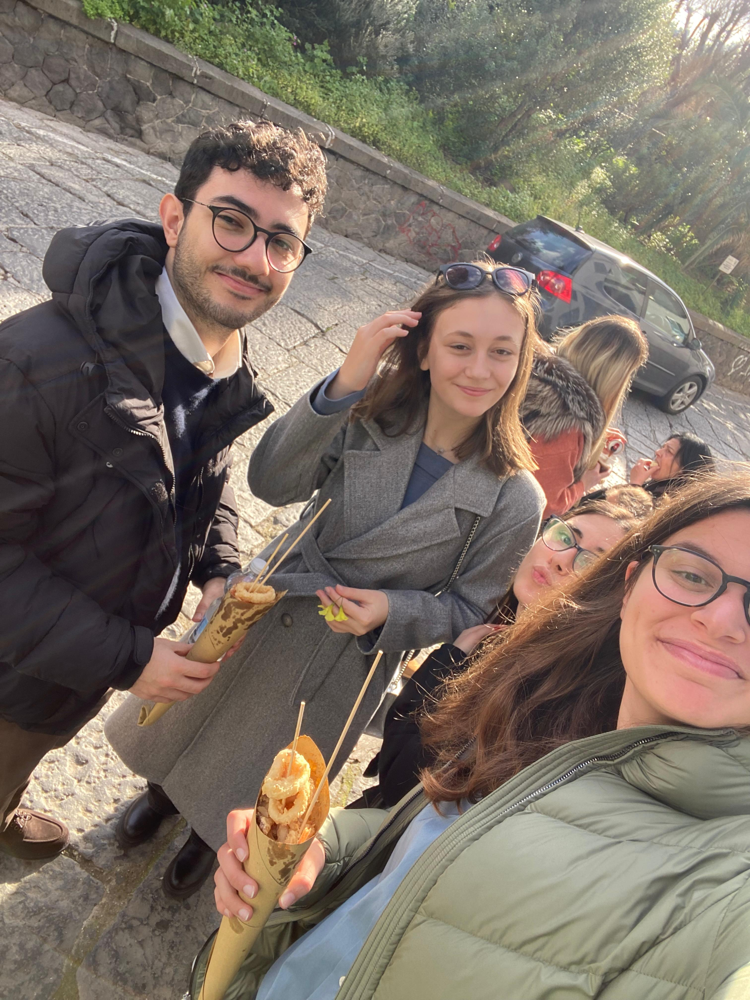
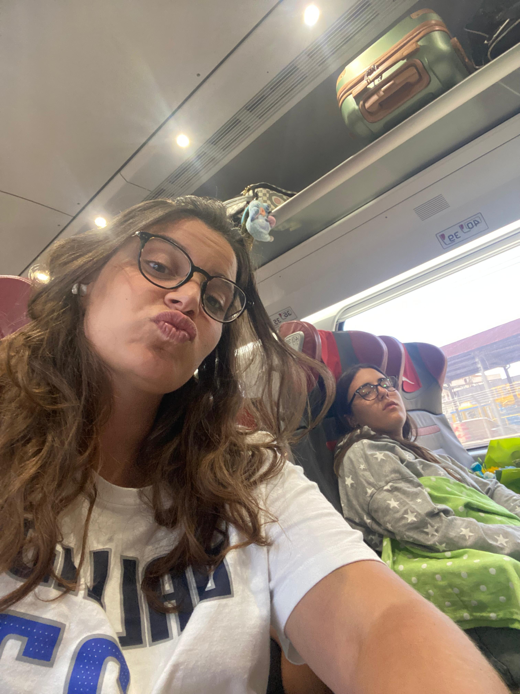
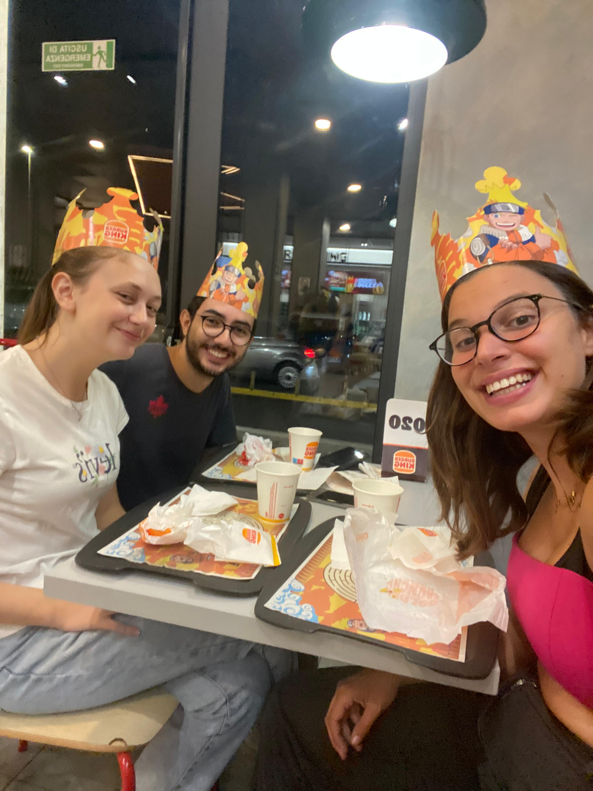
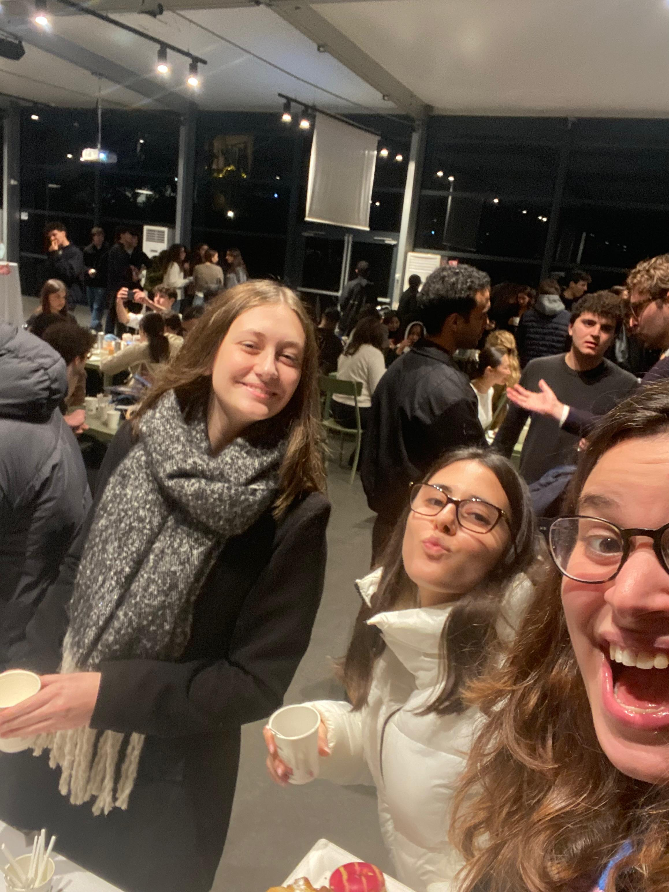
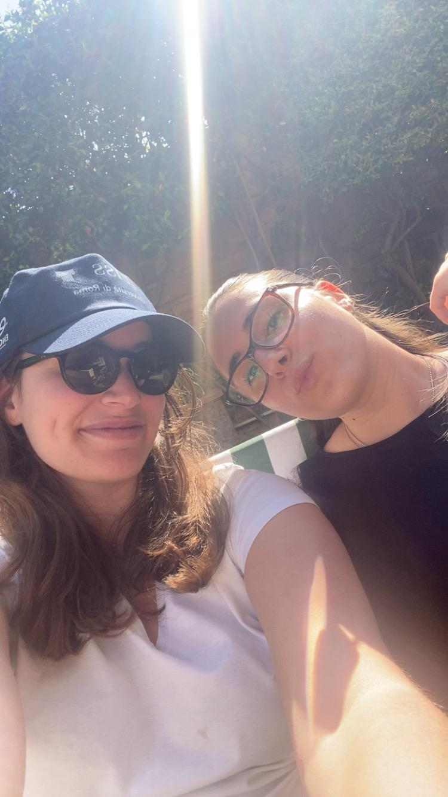
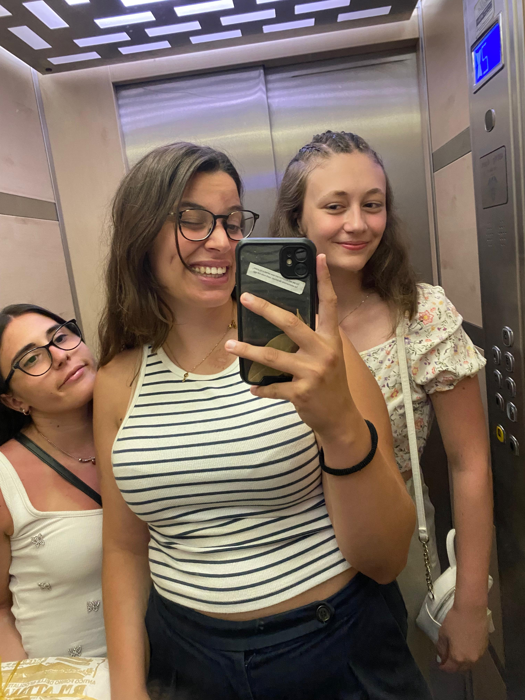
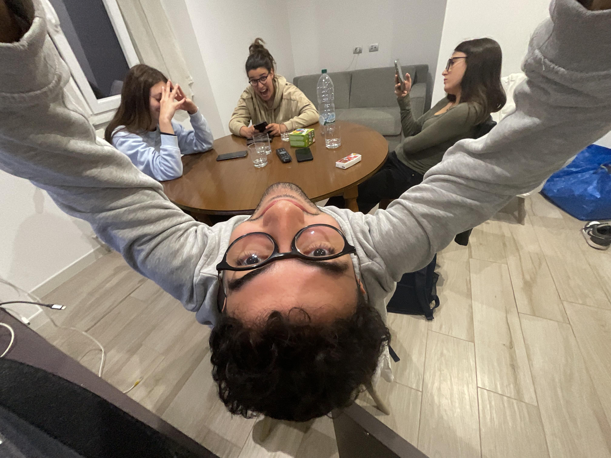
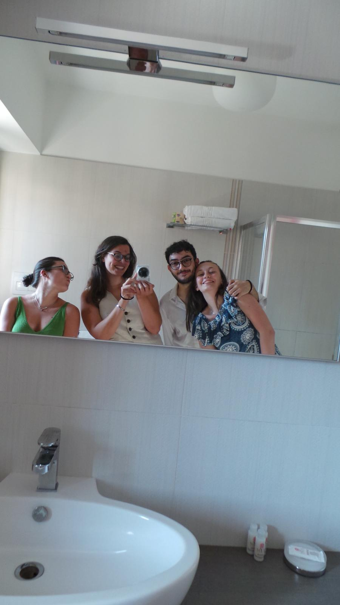
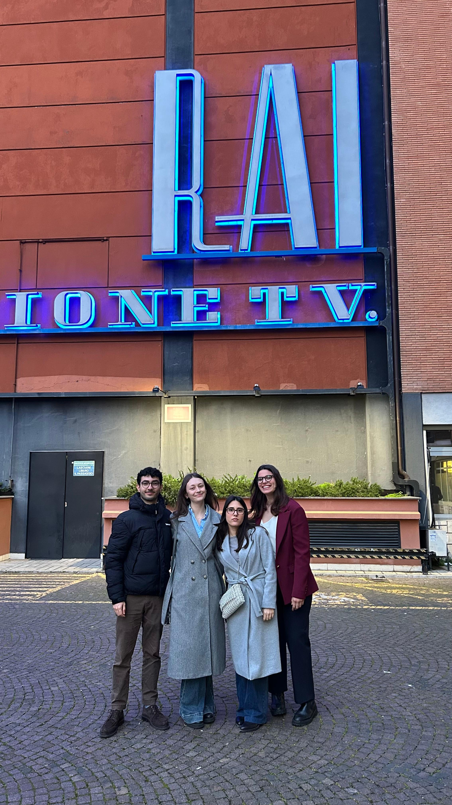
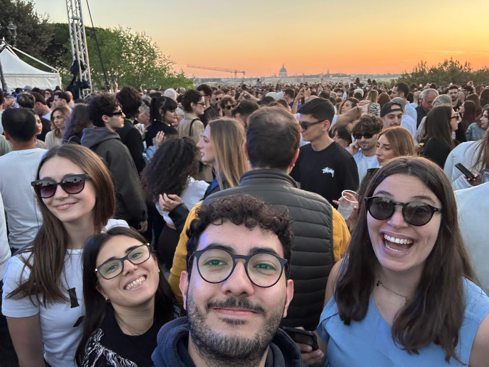
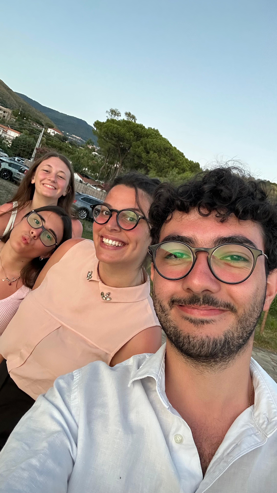
Agata, con te ho avuto un rapporto davvero bello. Ti stimo tanto: sei una bella persona, super divertente e, diciamolo, un po’ schizzata nel modo giusto.
Uno dei ricordi che secondo me ci rappresenta di più è quello di quando stavamo preparando l’esonero di statistica. Quelle risate infinite, impossibili da trattenere, sembravamo due pazze ubriache, quando in realtà è solo quello che succede quando stiamo troppo insieme (o quando studiamo troppo).
In quei momenti, e in tanti altri, sei stata per me un punto di riferimento. Sempre pronta a darmi la risposta giusta, sempre disponibile a rispiegare le cose anche più volte senza mai perdere la pazienza. E ora vedremo cosa succede quando vivremo insieme, ma credo che il bello sia proprio questo: esserci state l’una per l’altra in mezzo a tutto.
Scrivi qui il tuo messaggio per Nino.
A Giusi, la mia spalla destra.
Se ripenso a questi anni universitari, sono felice di averti trovata lungo questo percorso, perché sei diventata una di quelle persone su cui so di poter contare davvero. Grazie per esserci stata, per avermi ascoltata tutte le volte in cui ne ho avuto bisogno, anche quando avevo semplicemente voglia di sfogarmi per qualcosa andato storto, senza cercare necessariamente una soluzione, ma solo qualcuno disposto ad ascoltarmi. E tu, in questo, ci sei sempre stata.
Grazie perché sai ascoltare anche i miei discorsi infiniti, le mie preoccupazioni e quei momenti in cui magari ho solo bisogno di buttare fuori tutto quello che ho dentro. Grazie perché, anche quando forse non te ne rendi conto, riesci a farmi stare meglio con poco, a volte anche solo con un “tranquilla che ce la fai”. E magari per te sono soltanto parole, ma per me, in certi momenti, hanno significato molto più di quanto immagini.
Sapere di avere accanto una persona come te, con cui poter parlare liberamente e sulla quale poter contare quando le cose si fanno difficili, è stato prezioso in questi anni. Perché non sempre serve qualcuno che abbia tutte le risposte, a volte basta qualcuno che sappia ascoltarti, che ti faccia sentire capita e che ti ricordi che puoi farcela. E io, in te, ho trovato tutto questo.
Sono felice che l’università ci abbia fatte incontrare e che, tra esami, giornate no e tutto il caos di questi anni, sia nata un’amicizia così importante per me. Mi auguro che questo sia soltanto un capitolo della nostra storia e che, anche quando le nostre strade prenderanno direzioni diverse, continueremo a esserci l’una per l’altra, proprio come abbiamo fatto finora.